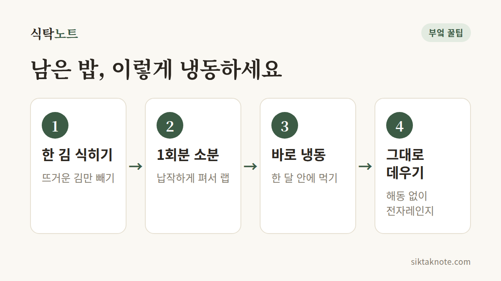

남은 밥 냉동 보관과 맛있게 데우는 법

3줄 요약
- 밥이 한 김 식으면 1회분씩 납작하게 소분해서 바로 냉동해 주세요.
- 먹을 때는 해동하지 말고 랩을 씌워 전자레인지에 곧장 데우면 돼요.
- 냉동밥은 한 달 안에 먹고, 밥을 실온에 2시간 넘게 두지 않도록 해요.

남은 밥은 식기 전에 소분부터
식은 밥을 냉장고에 넣었다가 딱딱하게 굳은 덩어리를 마주하면 괜히 한숨이 나오죠. 밥이 남았다면 냉장 말고 냉동실로 보내는 게 좋아요. 순서는 간단해요.
- 밥이 완전히 식을 때까지 두지 말고, 뜨거운 김이 어느 정도 빠지면 바로 나눠 담아요. 너무 오래 두면 수분이 날아가서 퍼석해져요.
- 한 번에 먹을 양만큼 랩으로 싸거나 냉동 전용 용기에 담아요. 두께는 2cm 안팎으로 납작하게 펴 주면 빨리 얼고, 데울 때도 고르게 익어요.
- 랩에 싼 밥을 지퍼백에 모아 담고 공기를 빼서 냉동해요. 한 달 안에 먹는 게 좋아요.
- 먹을 때는 얼린 채로 접시에 올려 랩을 느슨하게 씌우고 전자레인지에 돌려요. 한 공기 기준 2~3분 정도인데, 전자레인지 성능에 따라 조절하세요. 밥 위에 물 한 숟갈을 뿌리면 더 촉촉해져요.
밥을 식힐 때는 깊은 밥통 안에 그대로 두지 말고 넓은 접시에 펼쳐 주세요. 표면이 넓을수록 열이 빨리 빠져서 금방 식어요. 다만 아직 김이 펄펄 나는 밥을 그대로 랩에 싸면 물방울이 맺혀 밥이 질척해지니, 김이 빠진 뒤에 싸는 게 좋아요.

냉장고에서는 왜 딱딱해질까
밥 속 전분은 0~5℃ 근처에서 가장 빨리 단단해져요. 냉장고 온도가 하필 이 구간이라 밥이 딱딱하게 굳는 거예요. 떡이 굳는 것과 같은 원리인데, 궁금하다면 굳은 떡 말랑하게 살리는 법에서 더 자세히 볼 수 있어요. 냉동실은 이 온도대를 빠르게 지나 얼려 버리니까, 밥이 덜 굳고 데웠을 때도 원래 상태에 가까워요.

얼린 채로 바로 데우는 이유
냉동밥을 냉장실이나 실온에서 녹였다가 데우는 분도 많은데, 얼린 채로 바로 돌리는 쪽이 맛이 나아요. 천천히 녹는 동안 밥이 앞에서 말한 0~5℃ 근처를 느리게 지나가서 전분이 다시 굳기 쉽거든요. 따뜻한 곳에서 오래 녹이면 안전 면에서도 좋지 않고요.
푸석하거나 가운데가 차가울 때
전자레인지는 음식 속까지 고르게 데우지 못해서, 가장자리는 뜨거운데 가운데는 찬 경우가 생겨요. 밥 가운데를 살짝 오목하게 눌러 두고 돌리다가, 중간에 한 번 꺼내 가볍게 뒤적여 주세요. 아직 차가운 곳이 있으면 조금씩 더 돌려서 속까지 뜨겁게 데워 드세요.
밥이 푸석하다면 랩 없이 돌렸거나 수분이 모자란 경우가 많아요. 다음에는 물을 한 숟갈 뿌리고 랩을 덮어 보세요. 오래 둔 밥이라 푸석하다면 죽이나 볶음밥으로 써도 좋아요.
밥 냉동, 자주 묻는 질문
전자레인지가 없으면 어떻게 데워요? 찜기에 젖은 면보를 깔고 얼린 밥을 올려 쪄 주세요. 냄비에 밥과 물 몇 숟갈을 넣고 뚜껑을 덮어 약불로 데워도 돼요.
볶음밥은 어떻게 만들어요? 얼린 밥을 전자레인지에 살짝 데워 덩어리를 풀어 준 뒤 볶으면 밥알이 뭉치지 않아요.
냉동한 지 한 달이 넘은 밥은 먹어도 되나요? 냉동실에서는 세균이 늘지 못하지만, 오래 두면 밥이 마르고 냉동실 냄새가 배서 맛이 떨어져요. 그래서 한 달 안에 먹기를 권해요. 냄새나 상태가 조금이라도 이상하면 버리는 게 안전해요.
냉동밥 다룰 때 마음에 둘 것들
밥은 따뜻한 곳에 오래 두면 세균이 늘기 쉬워요. 밥에서는 바실러스 세레우스라는 균이 식중독 원인으로 알려져 있는데, 이 균은 가열해도 살아남는 포자를 만들고 일부는 열에 강한 독소를 만들어요. 식품안전나라 자료에는 구토를 일으키는 독소가 126℃에서 90분을 가열해도 파괴되지 않는다고 나와 있어요. 그러니 실온에 오래 둔 밥은 얼려도, 다시 푹 데워도 안전해지지 않아요. 냉동은 세균을 없애는 게 아니라 더 늘지 못하게 멈춰 두는 방법이거든요.
먹고 남은 밥은 2시간 안에 냉동하거나 냉장하는 게 안전하고요. 2시간을 넘겼다면 아깝더라도 버리고, 한 번 데운 밥이 남았다면 다시 얼리지 말고 버리세요. 데우고 얼리고를 되풀이하면 맛도 위생도 떨어져요.
냉동실 냄새가 밥에 배는 게 걱정이라면, 랩으로 싼 뒤 지퍼백에 한 번 더 담아 주면 다른 음식 냄새가 덜 배요. 잡곡밥이나 현미밥도 같은 방법으로 얼릴 수 있는데, 쌀밥보다 데울 때 시간이 조금 더 걸릴 수 있어요. 밥이 아니라 쌀을 두는 방법은 쌀 보관하는 법에서 따로 다뤘어요.
밥을 지을 때 넉넉히 하고, 먹을 만큼만 남긴 뒤 바로 소분해 두면 바쁜 날 아주 든든해요.